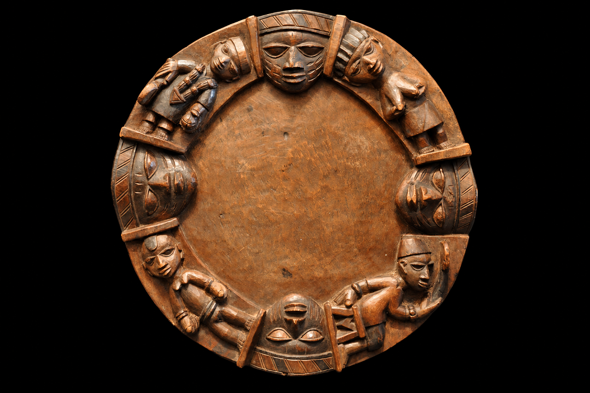

Home > Blog The Log of a Librarian > The Shape of Memory (07)
The Shape of Memory (07)
A Corpus in 256 Signs
Ifá Divination and the Organization of Oral Knowledge
This post is part of a series that explores the many ways human societies have stored, transmitted, and transformed memory across time, beyond the narrow histories centered on books and writing. It approaches archives, documents, and memory systems as historically situated technologies shaped by power, ecology, material conditions, and cultural worldviews, while examining forms of transmission often excluded from dominant narratives of literacy and preservation: oral traditions, woven patterns, musical structures, ritual performances, landscapes, bodies, and other living infrastructures of memory. Check all the posts in this section's index.
The Ifá Corpus
Among Yorùbá communities in southwestern Nigeria and neighboring areas of West Africa, Ifá constitutes both a system of divination and a large body of orally transmitted knowledge. It is associated with Òrúnmìlà, the divinity of divination and wisdom, and is practiced by trained specialists generally known as babaláwo. Ifá has also developed extensively outside West Africa, particularly within African-descended religious traditions in the Americas and the Caribbean.
The system is organized around 256 configurations known as odù. Sixteen are regarded as principal odù, while the remaining 240 are formed through combinations of the sixteen basic patterns. Each odù has a distinctive graphic configuration that can be produced through the manipulation of sacred palm nuts or through the casting of the divining chain,ọ̀pẹ̀lẹ̀. In palm-nut divination, the resulting configuration is marked on the powdered surface of the divination tray. The formal repertory of possible signs is therefore finite and highly structured. Abímbọ́lá describes the 256 odù as the principal categories of the Ifá literary corpus and emphasizes that recognition of their names and signatures forms an elementary part of the training of an Ifá priest.
The relation between this formal system and the verbal corpus associated with it is considerably less simple. Each odù is associated with numerous texts conventionally called ẹsẹ Ifá, generally translated as verses or poems of Ifá. These contain mythological narratives, accounts of earlier consultations, prescriptions, ethical statements, explanations of ritual action, observations on social relations, and other forms of knowledge. Abímbọ́lá described each odù as containing a large number of poems, while UNESCO's later description of the tradition states explicitly that the number of ẹsẹ is not fixed and continues to increase. The numerical estimates given in different sources also vary. It is therefore safer to treat the 256 odù as a stable formal structure and the body of ẹsẹ associated with them as an extensive and partly open repertoire rather than as a corpus whose total contents can be enumerated.
This distinction is important for the history of documents and information systems. Ifá does not present an example of an unwritten equivalent of a book, nor can the 256 odù simply be described as chapters containing a determinate set of texts. The relationship among sign, oral text, specialist memory, divinatory procedure, and interpretation is more complex. What remains comparatively stable is the system of possible graphic configurations. What is transmitted under those configurations depends upon extensive oral repertoires held by practitioners, their training, and the conditions of particular acts of divination.
Odù as an Organizing Structure
Abímbọ́lá divides the 256 odù into sixteen principal forms and 240 derivative combinations. The sixteen principal forms are produced when the same basic pattern appears on both sides of the divinatory configuration. The remaining odù combine two different basic patterns. The system also possesses an established order of seniority. The result is not merely a collection of signs but an ordered classificatory structure within which the verbal material of Ifá is organized.
Yet the classificatory analogy has limits. Abímbọ́lá states that individual odù possess recognizable characteristics and that many poems associated with an odù concern themes related to that character. At the same time, he explicitly notes that not every poem classified under a given odù necessarily conforms to its principal theme. The relationship between category and text is therefore neither arbitrary nor completely determinate.
Adélékè Adéẹ̀kọ́ has examined this problem more directly. He distinguishes between the 256 graphic inscriptions and the potentially unlimited narratives generated and performed in relation to them. His argument is particularly relevant here because he rejects the assumption that individual narratives adhere consistently to durable associations with particular inscriptions. The graphic structure establishes a formal framework, but divinatory narration retains substantial interpretive and compositional latitude.
This makes Ifá interesting from the perspective of knowledge organization. The system combines a finite set of formal categories with a verbal repertoire whose boundaries are not fixed in the same way. Stability exists at one level of the system without requiring complete stability at another.
That distinction also warns against describing the odù as simple addresses for stored information. A bibliographic classification normally seeks to establish a sufficiently stable relation between an intellectual category and the objects assigned to it. In Ifá, the relation between an odù and the materials brought into a consultation is maintained through tradition and specialist knowledge, but it remains capable of variation. The categories organize the corpus without exhausting its possible contents.
Training and the Location of the Corpus
The material organization of Ifá cannot be separated from the training of its practitioners. In his account of traditional priestly education, Abímbọ́lá describes a long apprenticeship beginning, in many cases, during childhood. The novice first learns to manipulate the divinatory instruments and to recognize the signatures and names of the 256 odù. According to his account, mastery of this initial stage alone could take several years.
The next stage consists largely of memorizing ẹsẹ Ifá. The student learns the poems associated with each odù incrementally from a master, often line by line. Abímbọ́lá describes the apprentice as repeating the master's recitation and continually reviewing previously learned material in order to maintain it in memory. Training also includes the ritual prescriptions associated with the poems, knowledge of sacrificial materials and procedures, and, for some practitioners, medicine and other specialized fields. Much of the learning occurs informally through observation of consultations and participation in the master's work. Initiation does not necessarily end this process; Abímbọ́lá presents advanced learning and specialization as potentially continuing throughout the practitioner's life.
The corpus consequently does not exist independently of its human custodians. A practitioner does not simply learn how to produce the 256 signs. He must acquire enough verbal, ritual, interpretive, and procedural knowledge to make the appearance of a sign operational within a consultation.
This is a different preservation problem from the one posed by a manuscript. A manuscript can remain physically present even when nobody remembers its contents. In an orally transmitted Ifá repertoire, the preservation of a text historically depended upon people continuing to learn and reproduce it. That dependence does not make the corpus imprecise. Abímbọ́lá's discussion of training instead indicates considerable attention to accurate memorization, sequence, and attribution.
At the same time, accuracy does not imply complete verbal immobility. Abímbọ́lá distinguishes between sections of ẹsẹ Ifá that practitioners are expected to reproduce closely and sections in which the diviner has greater freedom of expression. In his analysis of the structure of Ifá poetry, the opening elements identifying the earlier diviner, client, and situation, together with the concluding chant, occupy a more constrained position, while portions narrating actions and consequences may permit more variation in wording provided the principal plot and characters are retained. His description therefore presents oral preservation as regulated variation rather than simple verbatim repetition.
The Structure of Ẹsẹ Ifá
Abímbọ́lá proposed an eight-part model for the fuller forms of ẹsẹ Ifá. Not every poem contains every component, and shorter forms omit several of them, but the model identifies recurrent elements in the genre.
A poem may begin by identifying the diviner or diviners associated with an earlier consultation. It then identifies the person, community, deity, animal, or other figure for whom divination was performed and states the circumstances that prompted the consultation. The following sections may describe the advice or sacrifice prescribed, whether that advice was followed, and the consequences of compliance or refusal. The narrative may then describe the reaction to the outcome and conclude in a formulaic or chanted passage.
Abímbọ́lá characterizes this structure as a form of "historical" poetry, but the term requires care. He is describing the status of these narratives within Ifá practice, not establishing that the events narrated in every ẹsẹ can be treated as historical evidence in the modern historiographical sense. The protagonists may be human figures, deities, animals, plants, communities, or mythological beings. What matters for divination is that the poem presents an earlier case whose structure can become relevant to a present consultation.
The narrative form therefore performs an important mnemonic and interpretive function. Instead of presenting abstract rules alone, the corpus preserves situations: a problem arose, divination was performed, a course of action was recommended, the recommendation was followed or rejected, and an outcome resulted. The practitioner and client can relate the circumstances of a current consultation to these narrated precedents.
This does not mean that an ẹsẹ functions as a legal precedent in a strict sense, or that the same verse must always generate an identical prescription. It means that a considerable part of Ifá knowledge is organized narratively. The corpus preserves knowledge through recurrent situations and their consequences rather than exclusively through propositions or rules.
Selecting the Relevant Verse
The relation between odù and ẹsẹ becomes clearest in descriptions of actual consultation. Bascom's account is especially useful because he emphasizes that obtaining the divinatory figure does not itself provide the complete message. The figure determines the group of verses from which the consultation proceeds. The critical stage is the identification of the verse relevant to the client's problem.
In the procedures Bascom documented, the diviner recites verses that he knows for the odù that has appeared. The client listens for a verse corresponding to the circumstances that prompted the consultation. Bascom consequently states that the selection of the appropriate verse is made by the client, who knows the problem even when it has not initially been disclosed to the diviner. The process then continues through interpretation and the determination of the appropriate ritual response.
Abímbọ́lá describes a closely related process. The practitioner chants poems associated with the revealed odù until a poem is reached whose narrated problem resembles that of the client. The client then requests further explanation, and the practitioner interprets the verse and its implications for the consultation. Later descriptions of Ifá practice do not always present every procedural detail identically, so these accounts should not be treated as a universal protocol for all Ifá communities and historical periods. They nevertheless demonstrate an important structural characteristic of the system: generating an odù narrows the range of relevant material, but interpretation still depends upon the relation between the practitioner's repertoire and the particular circumstances of the consultation.
From an information perspective, this is not equivalent to conventional lookup. The appearance of an odù does not return one predetermined text. It establishes a domain within which several memorized texts may be recited. Relevance is then recognized through the interaction of sign, repertoire, narration, practitioner, and client.
The distinction matters because it separates classification from retrieval. The 256 odù provide a stable classificatory architecture, but the act of reaching useful knowledge depends upon procedures that cannot be reduced to that architecture alone.
Formal Stability and Narrative Variability
The coexistence of formal stability and narrative variability is one of the central features of Ifá as a knowledge system.
The possible odù are finite. Their signatures can be learned, named, ordered, reproduced, and recognized. The graphic component therefore possesses a high degree of formal closure. The associated corpus of ẹsẹ, however, does not possess an equivalent closure. Practitioners learn different repertoires, oral transmission permits variation, and scholars disagree about the number of texts that might be associated with an individual odù. UNESCO's current description explicitly treats the number as unknown and increasing.
Adéẹ̀kọ́'s analysis makes the consequences of this asymmetry particularly clear. The 256 inscriptions constitute one relatively constrained element of the divinatory protocol, while the narratives connected with them allow much greater flexibility. He argues that divinatory storytelling can loosen the connection between an inscription and any permanently fixed body of narratives. This capacity permits diviners to interpret inherited material in relation to present circumstances rather than simply reproduce a predetermined meaning.
For documentary analysis, this is more significant than treating Ifá as an example of a very large oral text. The corpus is not simply large. Its different components possess different degrees of stability.
The graphic system is closed. The verbal repertoire is not closed in the same way. Transmission seeks continuity without requiring identical repertoires among all practitioners. Consultation requires selection and interpretation rather than simple reproduction.
These characteristics produce a system whose persistence depends upon maintaining relations among several components rather than preserving one authoritative documentary object.
From Oral Repertoire to Recorded Corpus
Scholarly recording has introduced a different form of stability into Ifá. Collections published by researchers such as William Bascom and Wándé Abímbọ́lá preserve particular performances and repertoires in written form. Bascom's Ifa Divination includes a large collection of Yorùbá texts with English translations, while Abímbọ́lá's Ifá Divination Poetry presents selected poems from the sixteen principal odù together with analysis of their structure and style. These publications have been fundamental to the academic study of Ifá, but neither represents the entirety of the corpus. Bascom's work records material obtained through particular field relationships, while Abímbọ́lá explicitly presents a selection.
Writing changes the documentary condition of the material. A recited ẹsẹ can be fixed in a particular wording, translated, cited, compared with another version, and returned to independently of the practitioner who performed it. The scholarly edition therefore separates one version of a verse from the immediate conditions of apprenticeship and consultation in which such material traditionally circulated.
At the same time, textualization does not replace the oral system. A printed collection cannot reproduce the complete repertoire of a practitioner, much less those of all practitioners. Nor does it contain by itself the practical knowledge through which a divinatory figure is generated, relevant material selected, variations evaluated, ritual prescriptions understood, and the significance of a verse negotiated with a client.
The written corpus is therefore not simply the oral corpus transferred to another medium. It is a new documentary layer produced through selection, transcription, orthographic decisions, translation, editorial organization, and publication.
Safeguarding and Formalized Transmission
A further transformation occurred when Ifá entered international heritage frameworks. UNESCO proclaimed the Ifá divination system a Masterpiece of the Oral and Intangible Heritage of Humanity in 2005 and incorporated it into the Representative List of the Intangible Cultural Heritage of Humanity in 2008. Its description emphasizes the 256-part structure of the odù, the large and open-ended body of ẹsẹ, and the transmission of knowledge among Ifá priests.
Between 2006 and 2010, a UNESCO-supported safeguarding project in Nigeria sought to strengthen intergenerational and peer transmission. Its measures included the creation of a school, the collection of Ifá verses and medicinal recipes, and the improvement of existing documentation. The stated aim was to formalize part of the transfer of knowledge traditionally carried by priestly training.
This intervention is significant because it brings two preservation strategies together. One attempts to preserve the repertoire by recording it. The other attempts to preserve the capacity to reproduce and use the repertoire by training practitioners.
Those strategies are related but not identical. Documentation can preserve particular verses even when an individual practitioner dies. Formal education can broaden or regularize access to materials that had previously circulated through apprenticeship. At the same time, recording and curricular organization necessarily select from a tradition whose total verbal corpus is not fixed and whose practice has historically depended upon extended relationships between teachers and students.
The preservation problem is therefore not simply how many ẹsẹ can be collected. It also concerns the continuity of the competencies through which odù are recognized, verses remembered, variants handled, narratives interpreted, and consultations conducted.
A Documentary System Without a Definitive Text
Ifá is useful for the history of documents because it separates several functions that written documentary systems often combine within material objects.
The 256 odù provide formal organization. Human memory preserves much of the verbal repertoire. Apprenticeship transmits both texts and procedures. Divination selects a category. Recitation exposes possible relevant materials. Interpretation relates inherited narratives to present circumstances. Ritual practice determines what follows from that interpretation. No single component performs all these functions.
For that reason, describing Ifá as an "oral book" would obscure rather than clarify its documentary structure. A book normally presents the reader with an already assembled sequence of textual units. Ifá instead maintains a stable formal framework whose verbal contents are distributed among practitioners and mobilized through specific procedures.
Its continuity therefore does not depend upon the survival of a definitive text. It depends upon the persistence of a classificatory system, bodies of memorized material, practices of teaching, rules and conventions of performance, and communities capable of interpreting them.
The distinction is important beyond the study of Ifá itself. Documentary history has often treated textual fixity as a condition of complex organization. The Ifá corpus demonstrates that formal organization can coexist with textual variability, and that an extensive body of knowledge can remain structured without being stabilized as a single authoritative documentary object.
Ifá persists through the continued reproduction of its classificatory structure, its oral repertoires, its procedures of transmission, and the practical knowledge required to use them.
Bibliography
- Abímbọ́lá, Wándé (1975). Sixteen Great Poems of Ifá. Paris: UNESCO.
- Abímbọ́lá, Wándé (1976). Ifá: An Exposition of Ifá Literary Corpus. Ibadan: Oxford University Press.
- Abímbọ́lá, Wándé (1977). Ifá Divination Poetry. New York: NOK Publishers.
- Adéẹ̀kọ́, Adélékè (2010). "'Writing' and 'Reference' in Ifá Divination Chants." Oral Tradition 25 (2), pp. 283–303.
- Bascom, William (1969). Ifa Divination: Communication between Gods and Men in West Africa. Bloomington: Indiana University Press.
- UNESCO (2008). "Ifa Divination System." Representative List of the Intangible Cultural Heritage of Humanity.